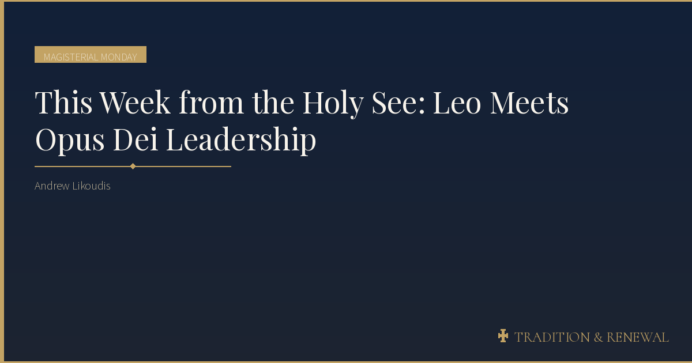
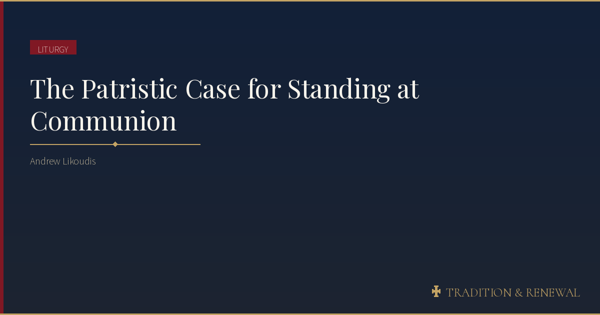
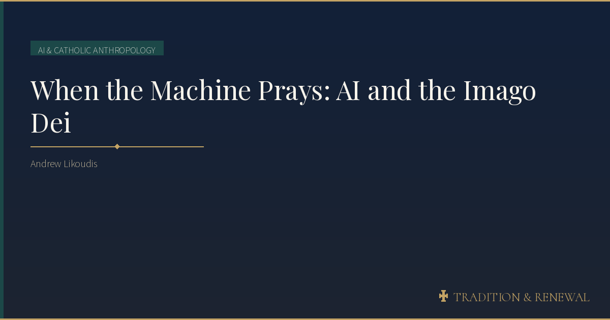
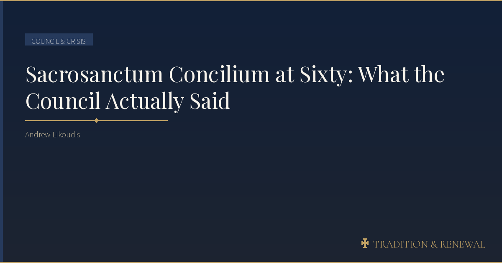
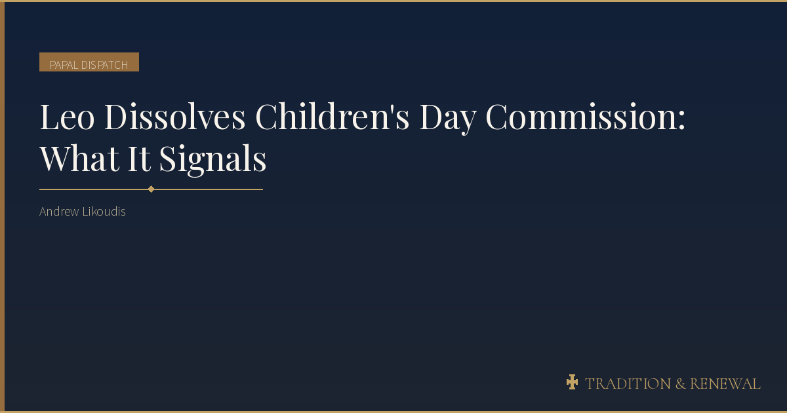
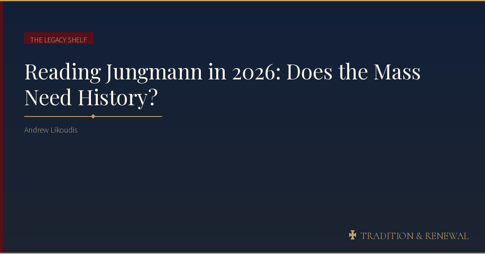
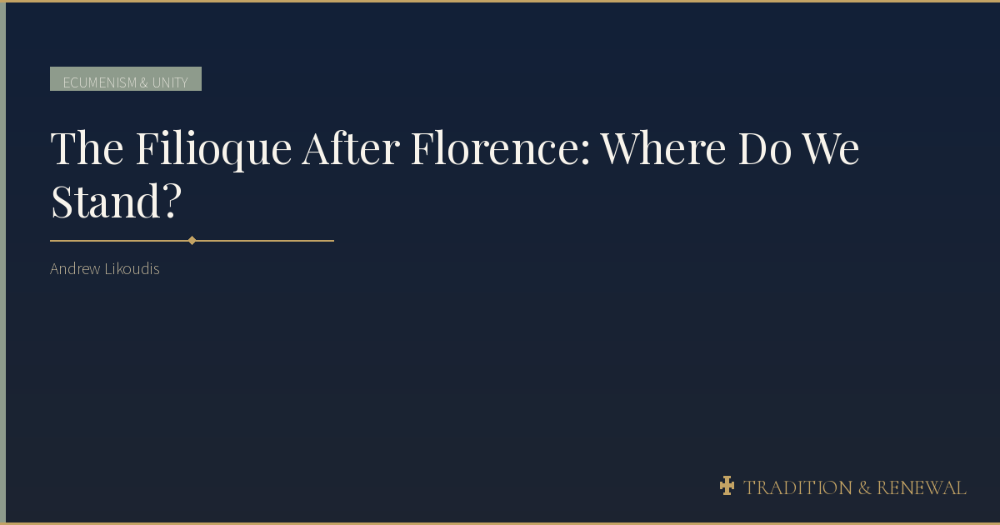
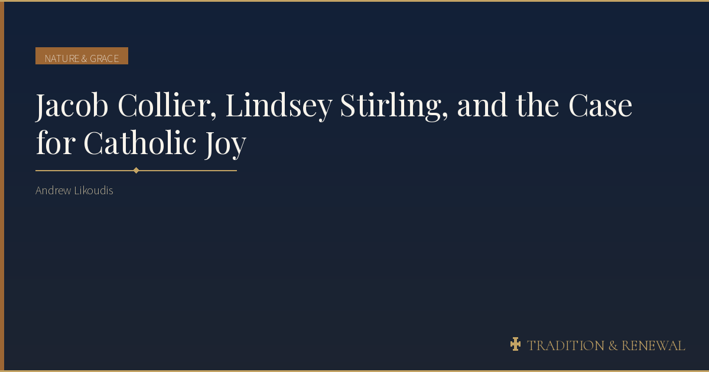
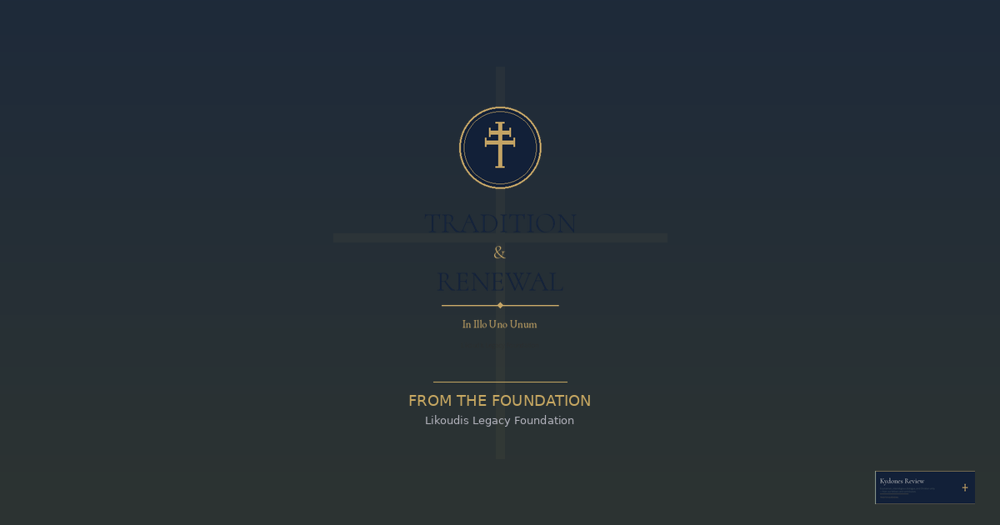
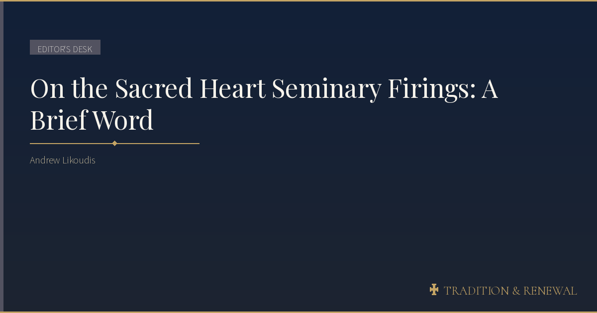

Catholic scholarship at the intersection of Vatican II, liturgical renewal, ecumenism, and the digital age.
Serious, balanced commentary for Catholics who refuse to choose between fidelity and intellectual honesty — from the posture debates to the deepest questions about how the Church worships, teaches, and encounters the modern world.
Ten sections covering the full breadth of Catholic intellectual life — from the magisterium to the Catholic internet.

A weekly briefing on papal teaching, curial documents, and the latest from the magisterium. Your anchor for the week.

Essays on the liturgical reform, sacred music, rites both Eastern and Western, and the Church at prayer.

What does it mean to be made in the image of God in the age of artificial intelligence? Technology, transhumanism, bioethics, and human dignity.

Deep dives into the documents of Vatican II, their contested reception, and the ongoing work of authentic reform.

Vatican governance, papal appointments, curial diplomacy, and the politics of the Holy See.

Reviews and reflections on Catholic books old and new — from patristic texts and conciliar documents to the latest in ecclesiology, theology, and Catholic intellectual life.

Ecumenism, interreligious dialogue, and Christian unity — Catholic-Orthodox relations, encounters with Judaism, Islam, and Protestantism, and the theology of dialogue. Named for John Paul II's encyclical on ecumenism.

Personal essays on faith, culture, and the whole miracle of being Catholic in the modern world. Film, music, food, travel, and the Catholic internet.

News from the Likoudis Legacy Foundation — conference announcements, the writings of Dr. James Likoudis, updates on the Kydones Review journal, and institutional developments.

Brief editorial takes, reactions to the news cycle, and what I'm thinking this week. Short-form and opinionated.
More than sixty years since the Second Vatican Council, the Catholic Church in the West finds herself navigating a crossfire of competing visions — some romanticizing a past that never existed, others racing toward a future unmoored from the deposit of faith. Tradition & Renewal was founded to chart a different course.
This newsletter offers serious, balanced commentary on Vatican II, the magisterium, ecclesial reform, and the intersection of faith and culture — written for Catholics who refuse to choose between fidelity and intellectual honesty.
The name reflects a conviction: that authentic Catholic reform is never a rupture with the past, but a deeper retrieval of it. The Second Vatican Council called for ressourcement — a return to the sources — alongside aggiornamento — an updating for the present age.
These are not contradictory impulses. They are the twin engines of every genuine renewal in the Church's two-thousand-year history.
Free subscribers receive every post. Paid subscribers get early access, exclusive essays, and a vote in what I cover next.
Subscribe to Tradition & Renewal